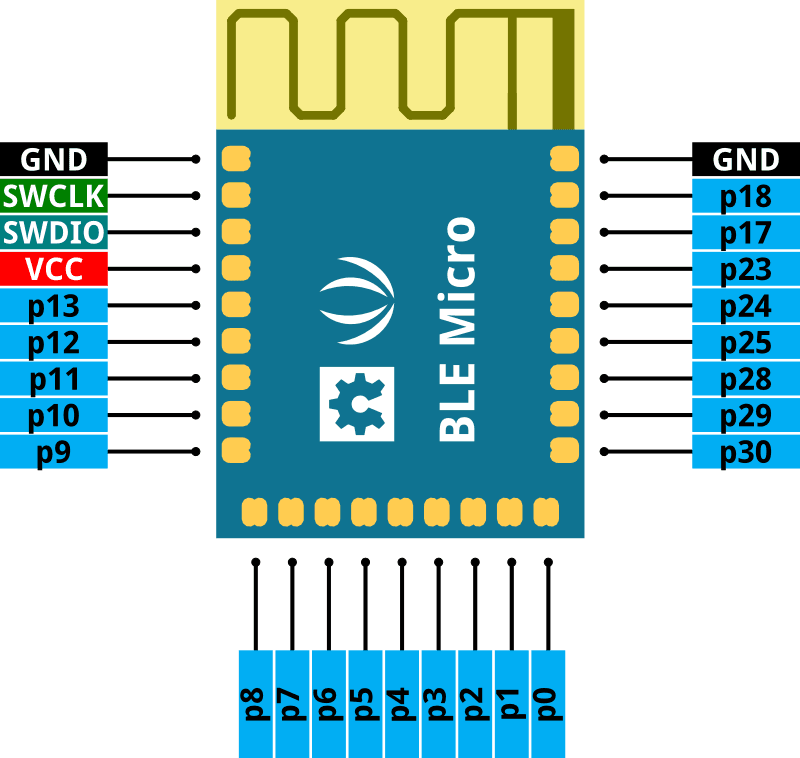
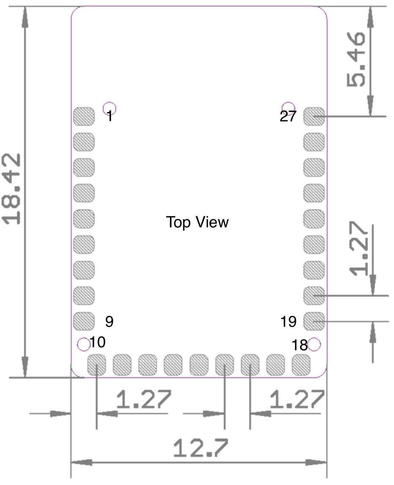
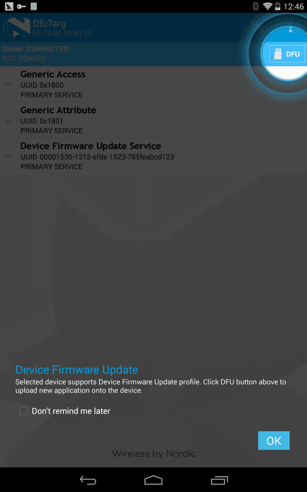
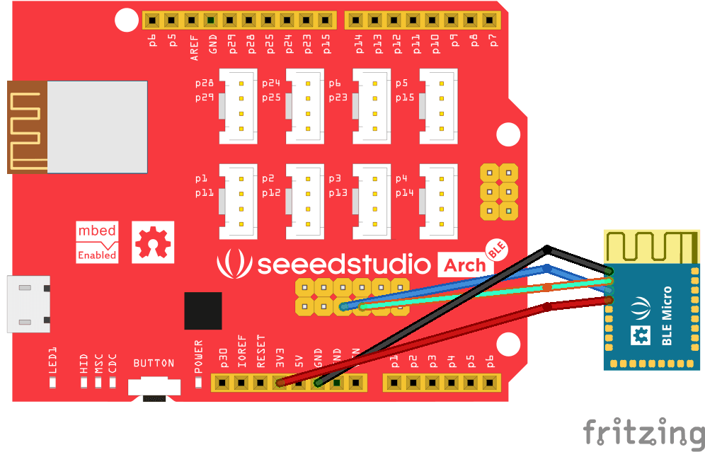

The BLE Mcicro is a low cost ARM cortex-m0 based module for Bluetooth® Smart designs with the nRF51822 SoC. The module gives access to at most 23 GPIO pins via pin pads and incorporates an on board PCB antenna to minimize material cost but also with a good performance.The application engineers can easily apply the module for theirs application without worrying about the specific impedance matching or soldering fine pitch related radio designing issues.
| Specification | Value |
|---|---|
| Microprocessor | nRF51822 based on 32-bit ARM Cortex M0 |
| Outline Dimension | 13.0mm x 18.5mm x 2.3mm |
| Power supply | 3.3V |
| On-air data rate | 250 kbps, 1 Mbps or 2 Mbps |
| Modulation | GFSK |
| Output power | Programmable: +4 to -20dBm in 4dB steps |
| Sensitivity |
-92.5dBm Bluetooth low energy |
| Radio current consumption LDO at 1.8V |
16mA – TX at +4dBM output power |
| Radio current consumption DC-DC at 3V |
10.5mA – TX at +4dBm output power |
| System current consumption |
420nA – No RAM retention |
| Hardware Security | 128-bit AES ECB/CCM/AAR co-processor |
| GPIO | 23 |
| Peripherals |
10-bit ADC |
Bottom view of BLE Micro:

Note: the pin SWDIO is also nRESET.

There are two batches of BLE Micro modules, one with Nordic S110 SoftDevice 6.0 and "DfuTarg" BLE device name, one with S110 SoftDevice 7.0 and "SD7DFU" BLE device name. The BLE Micro has a pre-flashed OTA bootloader. To enter OTA mode:

We can download and debug new application of BLE Micro with an Arch BLE or a J-Link through SWD interface. The Arch BLE is a BLE Micro + a CMSIS DAP interface which provides features like drag-n-drop programming, debug and USB virtual serial port communication.

Go to Seeedstudio mbed BLE project (or SoftDevice 6.0 branch to start developing. After you get your custom application hex file, use OTA to upgrade your BLE Micro.
If you are familiar with the Docker, there is a Docker container created by Paul for you to setup toolchain quickly. You can use the Dockerfile to get started.
If you have an Arch BLE, you can also use ARM mbed cloud-based IDE. See also Arch BLE wiki
By default, the BLE Micro is acted as a BLE to UART device. It can be connected to Android or iOS.